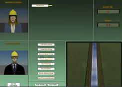
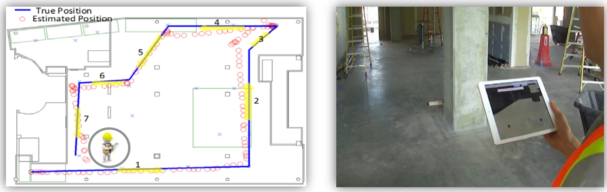

Smart & Connected Construction

To remain competitive, the construction industry in the U.S. requires a highly-trained and diverse workforce. The Virtual Interactive Construction Education project uses cyber-infrastructure tools to transform traditional subject-based lectures into project-based, interactive simulations in order to improve the quality and efficiency of undergraduate education. The learning modules place students in the full context of running a construction project in a computer-generated simulation environment. The project uses the simulation module along with assessment tools to determine the effectiveness of the module for student learning and engagement.
Journals:
- Cho, Y., Subramaniam, M., Guo, H., and Xiao, L. (2011). A framework for Virtual Interactive Construction Education (VICE)," Journal of Automation in Construction, Volume 20, Issue 1, January 2011, Pages 76-87, DOI: 10.1016/j.autcon.2010.07.002 [Full text]
- Goedert, J., Cho, Y., Subramaniam, M., and Ling, X.(2009). “Virtual Interactive Construction Education (VICE) using BIM tools.” 3rd International Conference on Construction Engineering and Management and 6th International Conference on Construction Project Management, Jeju, Korea, May 27-30, pp. S14-6. [Link] [Full text]

The dynamic nature and limited work space of roadway work zones contribute to the dangerous work environment for construction workers. These characteristics can create hazardous proximity situations because pedestrian workers are required to operate in close proximity to heavy construction equipment. A total of 609 work zone personnel fatalities were experienced in 2012. Previous analysis of work zone fatality data found that of the pedestrian worker and mobile object struck-by fatalities, a majority resulted from pedestrian workers being struck-by construction equipment. These statistics indicate that current safety practices for pedestrian workers and equipment operators are inadequate. The objective of this study was to create and evaluate a proximity detection and alert system using Bluetooth sensing technology. The scope is hazardous proximity situations between pedestrian workers and construction equipment in roadway work zones at grade. Many evaluation metrics were implemented to assess the tested proximity sensing systems including the cost, time and ease of calibration, required hardware, system capabilities, and many others. Commercially available RFID and magnetic field proximity sensing systems were also evaluated to provide a basis for comparison. Various interaction scenarios between pedestrian workers and construction equipment were used in the evaluation of the system. Experimental results demonstrate that the created proximity detection and alert system 1) requires minimal infrastructure, 2) provides adequate alerts to equipment operators and pedestrian workers, and 3) provides additional layers of hazard avoidance in real-time during hazardous proximity situations in roadway work zones.
Journals:
- Park, J., Marks,E., Cho, Y., and Suryanto, W. (2015)."Performance Test of Wireless Technologies for Personnel and Equipment Proximity Sensing in Work Zones." ASCE Journal of Construction Engineering and Management, Volume 142, Issue 1, January 2016, DOI: 10.1061/(ASCE)CO.1943-7862.0001031, 04015049 [Full text]
Proceedings:
- Park, J., Yang, X., Cho, Y. , (2017). "Adaptive Signal Processing for BLE-based Sensors for Construction Proximity Applications." 2017 ASCE International Workshop on Computing in Civil Engineering, June 25-27, Seattle, WA. (Accepted)
-
Park, J. and Cho, Y., and Timalsina, S. (2016). “Direction Aware Bluetooth Low Energy Based Proximity Detection System for Construction Work Zone Safety.” International Symposium on Automation and Robotics in Construction (ISARC), Auburn, AL, July 18-21, 2016, DOI: 10.22260/ISARC2016/0010 [Full text]
- Park, J., Cho, Y., Suryanto, W. (2015). "Bluetooth Low Energy Sensing Technology for Proximity Construction Applications." 2015 Conference on Autonomous and Robotic Construction of Infrastructure. Iowa State Univ. Aimes, IA, [Full text]
- Park, J., Cho, Y., Suryanto, W. (2015). "Mobile Proximity Sensing Technologies for Personnel and Equipment Safety in Work Zones." 2015 ASCE International Workshop on Computing in Civil Engineering, June 21-23, Austin, TX.doi: 10.1061/9780784479247.006 [Full text]

With enormous technological changes over the last decade, modern construction trends have become more complex and dynamic. This demands that construction professionals be more effective and organized to successfully complete their construction activities. However, recent research shows that current construction management techniques are ineffective. In addition, this research recognized the potential benefits of location awareness of construction resources in the construction management. The availability of location awareness information was identified to assist real-time decision making, provide more control over construction processes, and improve productivity and safety. Our group is interested in developing a low-cost, effective tracking system. This would be the first step forward in realizing construction management tools that leverage location awareness of construction resources.
Journals:
- Park, J., Chen, J., and Cho, Y. (2017). "Self-Corrective Knowledge-based Hybrid Tracking System Using BIM and Multimodal Sensors. " Advanced Engineering Informatics, Volume 32, Issue C, April 2017, Pages 126–138, DOI: 10.1016/j.aei.2017.02.001 [Full text]
- Park, J. and Cho, Y. (2017). "Development and Evaluation of a Probabilistic Local Search (PLS) Algorithm for Complex, Dynamic Indoor Construction Sites." ASCE Journal of Computing in Civil Engineering, Volume 31, Issue 4, July 2017, DOI: 10.1061/(ASCE)CP.1943-487.0000658 [Full text]
- Park, J., Kim, K., and Cho, Y. (2016). "Framework of Automated Construction-Safety Monitoring using Cloud-enabled BIM and BLE Mobile Tracking Sensors." ASCE Journal of Construction Engineering and Management, Volume 143, Issue 2, February 2017, DOI: 10.1061/(ASCE)CO.1943-7862.0001223,05016019 [Full text]
- Park, J., Cho, Y. , and Martinez, D. (2016). "A BIM and UWB integrated Mobile Robot Navigation System for Indoor Position Tracking Applications." Journal of Construction Engineering and Project Management, Volume 6, Issue 2, 2016, pp.30-39, DOI: 10.6106/JCEPM.2016.6.2.030 [Full text]
Proceedings:
- Park, J. and Cho, Y. (2017). “Performance Analysis of a Probabilistic Local Search Algorithm for Indoor Tracking.” Proceedings of the 2017 International Workshop on Computing for Civil Engineering (IWCCE), Seattle, WA, USA, June 25-27, DOI: 10.1061/9780784480847.006 [Full text]
- Park, J. and Cho, Y. (2016). "Use of Mobile BIM Application integrated with Asset Tracking and Cloud Computing Technologies." Invited Speech, CRIOCM 21st International Conference on "Advancement of Construction Management and Real Estate" Hong Kong, Dec. 14-17 [Full text]
- Park, J., Kim, K., and Cho, Y. (2016). “Using BIM Geometric Properties for BLE-based Indoor Location Tracking.” Seoul International Conference on Applied Science and Engineering, Seoul Korea July 5-7, 2016. [Full text]
- Park, J. and Cho, Y., and Kim, K. (2016). “Field Construction Management Application through Mobile BIM and Location Tracking Technology.” International Symposium on Automation and Robotics in Construction (ISARC), Auburn, AL, July 18-21, 2016, DOI: 10.22260/ISARC2016/0011 [Full text]
- Park, J., Cho, Y., and Ahn, C. (2016). "A Wireless Tracking System Integrated with BIM for Indoor Construction Applications." Construction Research Congress 2016: pp. 2660-2668, DOI: 10.1061/9780784479827.265 [Full text]